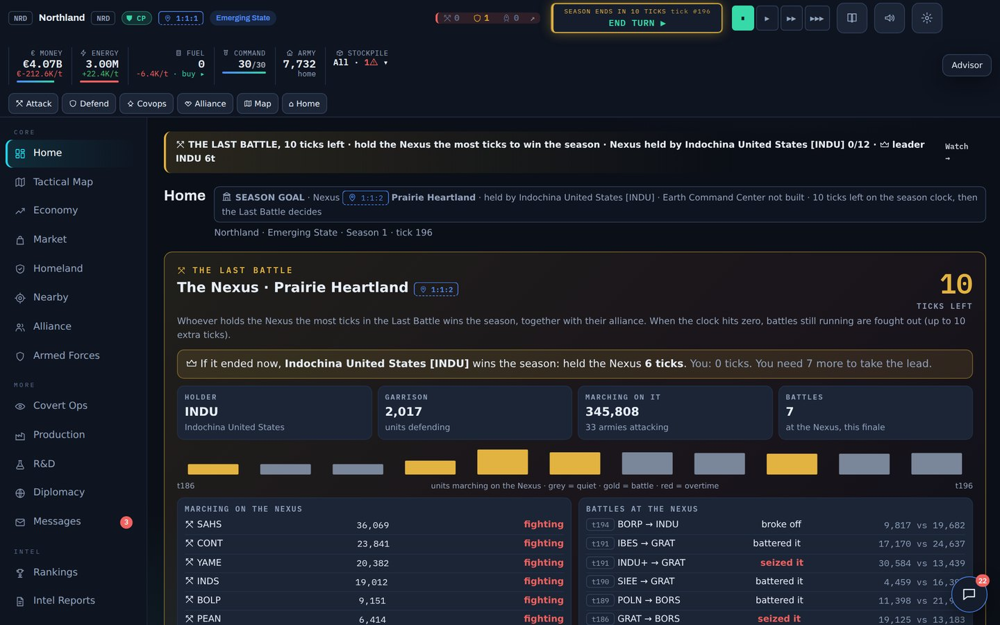
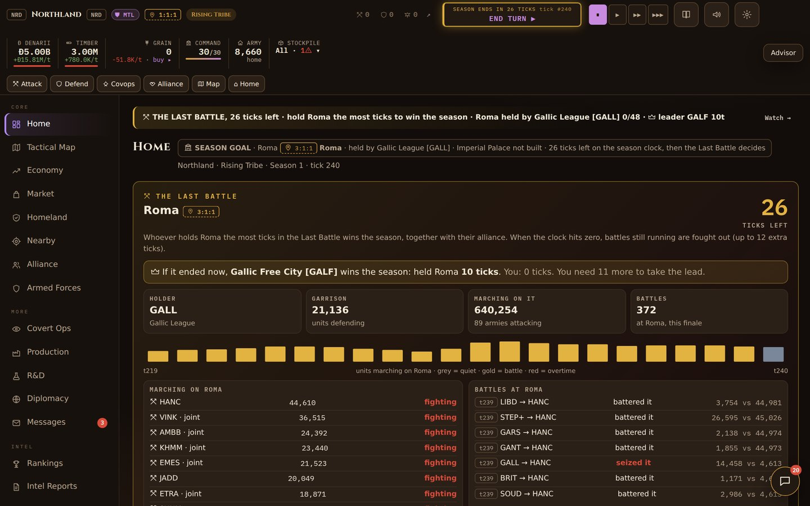
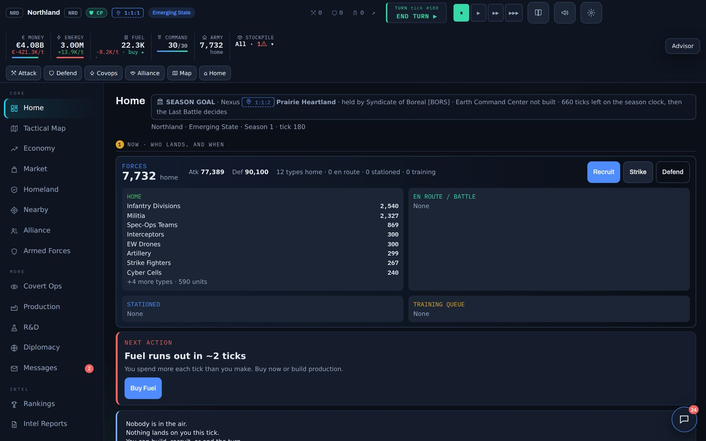
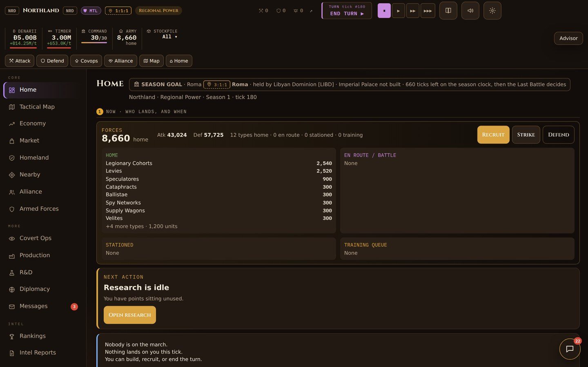

Ironfront joins as the third era, with its own battle layer. And Update 6.0, for all three games, is about the parts you do not see until they go wrong: where your save lives, how long you wait after an order, and how long a turn takes. Your saved game keeps working and moves over by itself.
A world at war in a 1940s style, with invented nations. The same season, alliances and fair AI as Terrastate and Romaterra, with its own prize and its own battle layer. In Ironfront every tick is a decision.
There is not one prize but three. Hold two of them at once with a GHQ Bunker for 12 ticks, alone or as one alliance, or hold one the longest in the Last Battle.
A battle lasts three ticks, and each tick both sides give an order. Assault, Barrage or Flank against Dig in, Counter-attack or Ambush. The side that guesses right gets +25% that tick.
Dig trenches, lay a minefield or pour a bunker on a region an enemy is heading for. Each takes 1, 2 or 3 ticks: a race against the moment they land.
An incoming army first shows as radio traffic, with an estimate of its size. A successful scan shows the real army. Your own attack can be a feint: on weaker radar it looks three times bigger, and it turns back before it lands.
Allied help that is in place when the battle starts counts in full. Help that arrives later counts half. The Front board shows your alliance's fronts, soonest first.
The computer nations give orders, dig in and send feints by the same rules, pay the same costs and see no more than their radar shows.
Your save now lives in a much larger store in your browser. The old storage held about 5 MB for every game on the site together, and a long season came close to that.
The game used to squeeze the whole world into a small package after each order you gave. On a slow phone that took seconds. Now saving takes a fraction of that.
The computer nations weigh their options with less repeated work, so a turn is calculated faster. Nothing about how they decide has changed. In our test on a slowed-down phone, a turn went from about 6.5 to 3.8 seconds, and saving after an order from about 5.5 seconds to 0.2.
When you press END TURN, a "Calculating turn" bar appears straight away, so you can see the game is working.
The first time you open 6.0, your saved game and save slots are copied to the new store. The old copy stays where it was as a reserve. If your browser does not allow the new store, for example in some private windows, the game simply keeps using the old one.
Update 5.0 rewards the commander who plays. Allies march for you when you give orders, the bounty goes to whoever defended, and a full treasury finally has something to build. Warlord plays sharper with the same resources, the comeback bonus is clear and capped, and Home and the phone screen are calmer. Your saved game keeps working.
AI neighbours and alliance mates now send armies to commanders who play. Give an order in the last twelve turns, or keep at least a quarter of the attacking force at home, and they come. An empty capital is on its own, and the game tells you why.
When allied garrisons help you hold a region, the influence and money for the repelled attack are now shared by who actually defended. If they did most of the work, they get most of the bounty.
A full treasury finally has a goal. Three projects per game (Terrastate: World Expo, National Space Program, Grand Monument. Romaterra: Great Library, Triumphal Arch, Colosseum). Each gives influence once and +5% influence production for the rest of the season. Renown only, never military power.
On Warlord, alliance joint strikes come faster and scouts remember what they saw of your army, so the AI picks counter-units. It still gets no extra resources. On Recruit, joint strikes come slower.
The two catch-up bonuses no longer stack without limit. Together they stop at +150% production, and Home shows "Comeback bonus +X%" so you know when it helps you.
One "next action" card on top, with a one-line summary of your army. The unit breakdown lives on Homeland. Around you, the watch on the prize and while you were away are folded under "More on Home".
On phones the header tools hide while you scroll down and come back when you scroll up. The map gets the full screen and opens on your own region. The smallest text on the game screens is now 12 pixels.
Update 4.0 comes in phases, and the first three are here. Phase 1 is about the things that should simply work: your save, your thumb on a phone, and telling a friend about your season. Phase 2 is about your first ten minutes: you learn by doing, and your first battle explains itself. Phase 3 is about the long game: a rival who seeks you out and comes back next season, goals for every phase, and seasons that feel different. Update 4.0 is in Terrastate and Romaterra, and your saved game keeps working.
What you play now is Season 0, the training ground for the live world: the same game, one shared season, with real people as the other nations. It opens when 100 commanders have joined the waitlist on Discord. Everyone who plays Season 0 is marked as a Founding Commander.
Early in every season one nation marks you as its rival. It writes to you, reacts when you climb past it, scouts you and every so often sends an army your way, with a warning first. It uses the same commands and pays the same costs as every other nation, and never touches you during your newbie protection.
At the end of a season your nemesis, the nation you beat most, and your rival are remembered. Next season they return with the same name, flag and character, and they mention what happened last time. They start exactly like every other nation: memory, never a bonus.
A season has five phases. Each one now brings a short goal, from finishing three research projects to sending an army to the prize, with a small influence reward and a phase medal. Reach all five for the Every Phase achievement.
Refugees, arms dealers, scandals, inventors, a defecting general and more. Some choices come back ten or fifteen turns later with a follow-up, and you will not see the same event again until you have seen the rest.
Starting a new season in solo, you can pick an optional rule for the whole world: Cold Peace (no attacks on nations before turn 60), Fast Nexus (the prize wakes early) or Iron Wall (every region defends 25% harder). The same rule applies to every nation.
Between seasons the solo game no longer shows a pretend lobby with a week-long clock. You see your last legacy title, who remembers you, and you choose difficulty, length and the season rule, then start.
Seven new achievements that span seasons: Three Seasons, Many Faces, Podium, Both Eras (play both games on this site), Score Settled, Rivalry and Every Phase.
Finished all six scenarios? Play them again on Warlord. Every finish earns a medal: Gold within half the turns, Silver within three quarters, Bronze for a finish.
The new ⏩ button next to the speed controls plays turns for you and stops by itself at the first thing that needs you: an event, a battle, an army marching on you, a finished building, research or batch of troops.
Five small tasks instead of four pages of text: start a research, queue a building, train troops, fight a war game and end your first turn. A bar at the top of each screen shows the next task. Skip it any time.
The war game runs the real battle formula with your own army against a training garrison. You see your attack, their defence and how each phase went. Nothing is lost and nothing is won, so it gives no edge over the computer.
No national events in your first ten turns. New players start on Recruit and a Quick season, and the invite code waits under one tap. Covert Ops, Market, Diplomacy and Intel Reports join your menu when the training is done.
The tips on each screen now sit under "How does this screen work?" at the bottom, so the buttons come first. The National Path cards fold away until you have seen your first battle.
On a laptop the top bar is two rows instead of three. On a phone, "Your nation" on Home folds away like "The world", one tap to open.
If a saved game will not open, for example after an update, the game no longer starts over. It shows you your auto-save and save slots, lets you download the file, or starts fresh while keeping the old save aside.
On a phone, a big END TURN button now sits at the bottom of the screen, right above the menu. It shows "Working…" while the world moves. Small buttons got a larger touch area too.
At the end of a season, one tap shares your story: your rank, your wars, your nemesis and a link to the game. On a phone it opens the share menu, on a computer it copies the text.
The computer now picks the units that give the most fighting power for their price, instead of always the most expensive ones. The heaviest units got cheaper so they are worth researching (in Terrastate: Powered Armor and Titan Mechs), and the cheap swarm unit costs more upkeep, because it was too strong for its price.
The menu, the page titles and the shortcuts now use the same names everywhere, so "Alliance" is always Alliance and "R&D" is always R&D.
The computer nations used to fight one battle at a time, and quietly got a few things for free. Now every rival alliance has a war council that plays the whole season to win, and it pays exactly what you pay.
Every computer-led alliance now has a war council. It reads the season: grow in the opening, pick one rival to take ground from, and turn everything toward the Nexus (in Romaterra, Roma) when the end comes near. It explains its plan to its members in the alliance chat.
Alliances sign non-aggression pacts to keep their flanks quiet, form coalitions against a runaway leader, end a pact honourably before they attack, and sue for peace when a war is lost. A sly leader may still break a pact for a surprise strike. Nobody keeps more than four pacts, so the map never freezes.
An alliance scouts its target, shares the report, raises a war alert and launches a joint strike that its members join. When one of them holds the Nexus, the others send troops to defend it.
No free command points, no free influence, no bigger economy. It pays the same costs as you and only knows the defence of your land after it has scouted it, just like you. Warlord difficulty now means sharper play, not more money.
Pick a pattern, three colours and a symbol. Tap your flag in the top bar, or open Settings. In Romaterra it is your standard.
Your flag shows in the rankings, your alliance, the Nexus panel and on every nation you look at. Every computer nation has its own. It is only looks: no bonus, no change to the balance.
When a member of a computer alliance is attacked, it calls for help at once and up to three allies who can arrive in time send part of their army. The Legion reserve deploys on its own.
Alliances declare war more often, but they scout first and defend twice as hard as before. In our tests fewer regions changed hands than in Update 2.
Computer nations no longer attack an alliance their own alliance has a pact with by mistake. Breaking a pact is now a decision, made by a leader with that kind of character.
The hardest difficulty in solo used to give the computer 15% more economy. Now it gets nothing extra. It just plays sharper and hunts you harder.
A season used to stop dead on its last tick, even with armies halfway through a battle for the prize. Now the end is the best part: the whole world marches on the Nexus (in Romaterra, on Roma), and whoever holds it the longest wins the season. Update 2 is in Terrastate and Romaterra, and your saved game keeps working.
Near the end of a season a big gold panel opens on Home, Homeland and Rankings: who holds the prize, how many defend it, how many armies are marching on it, every battle with the numbers, and a clock that counts down.
From the moment the Last Battle starts, the game counts how many ticks each nation holds the prize. Most ticks wins the season, and the whole alliance shares the win. The top bar always shows who leads, and how many ticks you need to take the lead.
When the clock runs out while armies are still fighting for the prize, the season does not stop. Overtime runs until the last battle is over, with a limit. Only armies that left before the clock ran out take part.
In the last part of a season, the launch screen tells you straight away whether your army will make it in time to fight, or land too late.
The start of the Last Battle, the state of play, every change of leader in the hold race and the final result all appear in the world news.
The season ends with the report of the Last Battle: who won, the final hold race, how many battles there were, and what your part was. The winner goes into the Hall of Fame.

On Home, every army on the move now shows where it is heading, when it lands, and in a joint attack, who it marches with.
A Withdraw button on Home takes your army out of a joint attack, and your alliance gets a message. The leader of a joint attack can call it off for everyone.
Strike fighters and bombers were too weak for their price. They now hit harder and cost less, so they are worth building. Air defence still counters them.
After your first turns, Home teaches you to grow in three steps: scout a neighbour, take your first region, hold three regions.
The help, the season rules and the start screen now all explain how a season is won, including the Last Battle.
Romaterra plays four times faster than Terrastate, so its Last Battle is longer in turns: it runs for the final 80 turns of a full season, and in shorter single-player seasons it scales with the length you picked. The live world, when it opens, is timed so a season ends at 9 PM in New York (6 PM in Los Angeles).

Version 1.0 is for Terrastate and Romaterra alike. The rules of a season did not change. What changed is how the game talks to you: what is happening, what to do next, and why. Your saved game keeps working. Open the game in the same browser and carry on.
Who is in the air, and when do they land? Incoming attacks are red, help from allies is green, your own strikes are blue. Your army sits right underneath, with Recruit, Strike and Defend.
The homeland you pick is the homeland you get, with its economy. No AI nation can slip into your spot while the world is set up.
A compact top bar with your supplies in one row, four clear buttons on your first evening, wide lists you can swipe sideways, and a map that follows your finger.
Line held, region taken, attack failed: you read it at a glance, with your losses and theirs, and the next move right under it.
The defensive line uses militia and infantry you already have, never units you have not unlocked yet. Soldiers still in training count toward your defence.
The small overview map now sits top left, so it is always in view, also on smaller laptop screens.

Another nation's strength stays unknown until a scan lands. A scan costs influence and a command point, and their radar can bounce it. No scan, no forecast.
Break the garrison and the region is yours, with a cut of what they had stored: five percent, with a cap. A shield or beginner protection still stops both the flag and the loot.
You choose your path after you have seen one battle. That choice locks for the whole season, so now you know what you are choosing.
The price you read is the price you pay. Buying into a hot market, or buying in bulk, costs more tax. Covering a real shortage costs less. Your buys and sells show as dots on the chart.
The strongest late units (Swarm Drones, Ghost Squadrons and Titan Mechs in Terrastate) no longer decide a season on their own. They hit less hard and cost more.
Combat and stockpiles refuse broken numbers, so one bad tick can never freeze your game.
In your first ticks a neighbour tests your shield. They cannot take the ground while beginner protection holds, so you get to watch a real attack without losing anything.
The nations around you have a name and a temperament: some raid, some hold, some are rich and thin. They remember a strike.
Production shows what a place is (a breadbasket, a works, a fortress) and how full it is. A technology says what it unlocks before it mentions a percentage.
Captures, held lines, incoming fire and successful covert work are written into the alliance feed automatically.
Wars grow in stages, from scouting to occupation. Alliances vote on world laws. Landmarks give a region a special reward worth fighting for.
Every tip card has a close button, and stays closed in your browser until you reset your tips in the settings.
Everything above is also in Romaterra, in Roman dress: legions instead of tanks, denarii instead of euros, and Roma with its Imperial Palace as the prize. In Romaterra the late units that were toned down are the Slinger Swarms, Shadow Exploratores and War Elephants.

Prefer a printable version? Terrastate note (PDF) · Romaterra note (PDF)
We played full seasons of 1.0 and clicked every button on laptop and phone. Nothing broke, but a few screens said too much, or said it twice. This patch cleans that up. It is in Terrastate and Romaterra, and your saved game keeps working.
In the Alliance room, one Scan button now reveals every unknown fleet heading for a teammate, not just the first one. What you found is shown right there: who is coming, how many, and with what.
In Homeland, a revealed fleet now shows what it carries. With several unknown fleets on one region, Reveal all scans them in one go.
Under attack, Home and Homeland showed the same warning up to six times, sometimes with different numbers. Now each screen says it once, with the total strength of everything that is coming.
Your own alliance no longer shows up in your list of targets, or in the covert ops list. Field Recon now starts with your neighbours instead of a country on the other side of the world.
When their radar stops your scout, you now read that it bounced. Before, you got a report full of strange symbols.
The red SOS warning is two short lines with its buttons, instead of filling the whole screen. The covert ops lists fit on the screen.
Your alliance advisor now sees an attack the moment it is launched, instead of saying all is quiet for a few more turns.
Allies who came to defend you now have a Send home button on Home. And once nothing has come at that region for 24 turns, they head home by themselves.
Army readiness now says how hard you fight, for example "Ready fights at 85% strength". In Romaterra, armies are "on the march" instead of "in the air".